Chicago Italian Beef Sandwich
Thin-sliced seasoned beef piled on a roll, dipped in jus, and topped with hot giardiniera.
$4.99
10 free recipes · 13 premium recipe cards · guest checkout
Moss & Mill is a Chicago recipe shop from Elena Vargas. Cook our free recipes today, or buy kitchen-tested premium recipe cards — Italian beef, deep-dish pizza, shrimp De Jonghe, giardiniera chicken, and Chicago-style cheesecake — with full steps, tips, and printable cards.
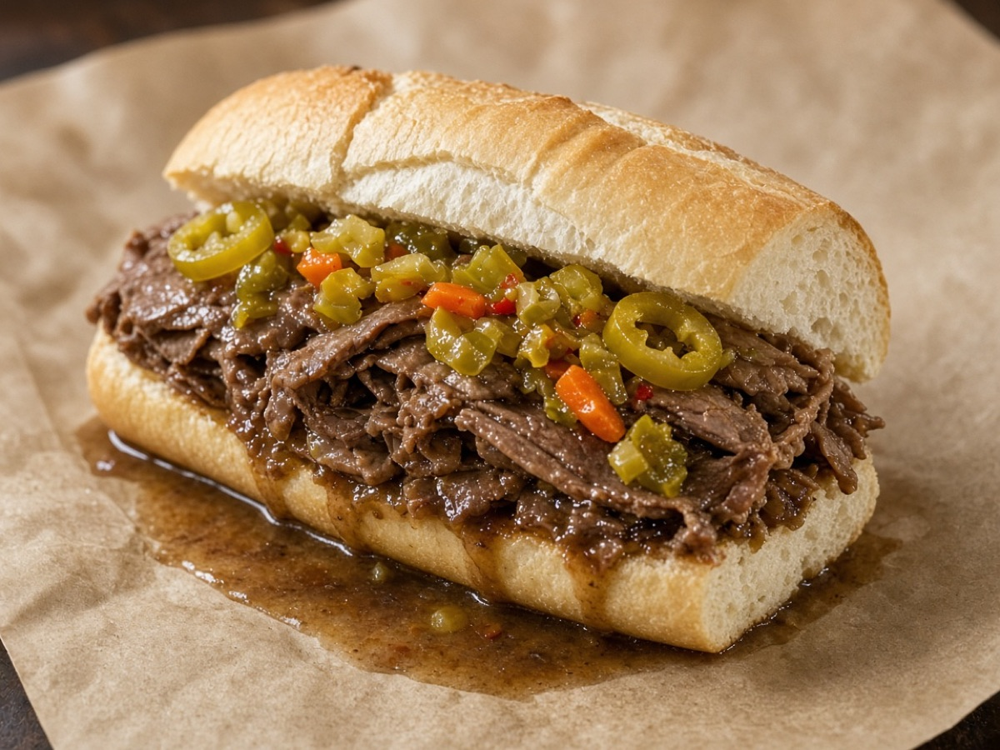
Premium card · $4.99 BestsellerChicago Italian Beef Sandwich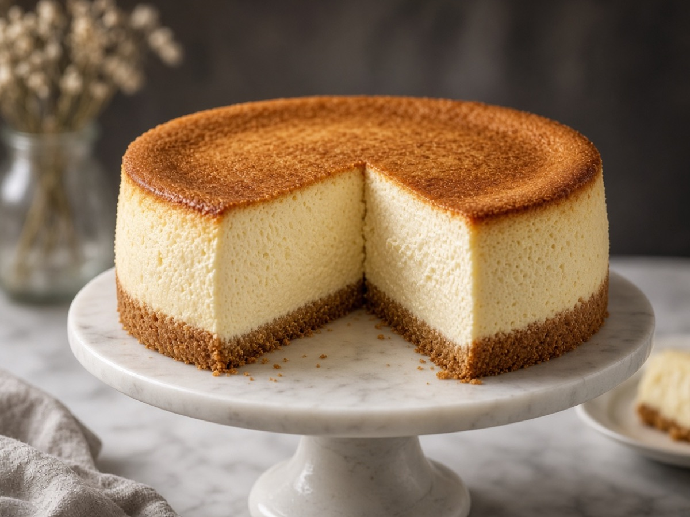
Weekend bake · $4.99Chicago-Style Baked CheesecakeBestsellers
Thin-sliced seasoned beef piled on a roll, dipped in jus, and topped with hot giardiniera.
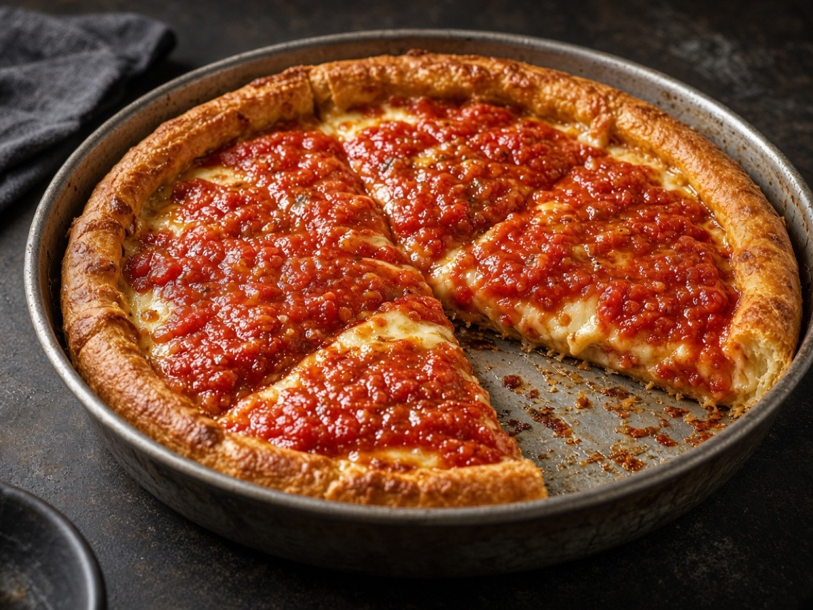
Mains$5.99Buttery cornmeal crust pressed into a deep pan, layered with mozzarella, sausage, and chunky tomato sauce.
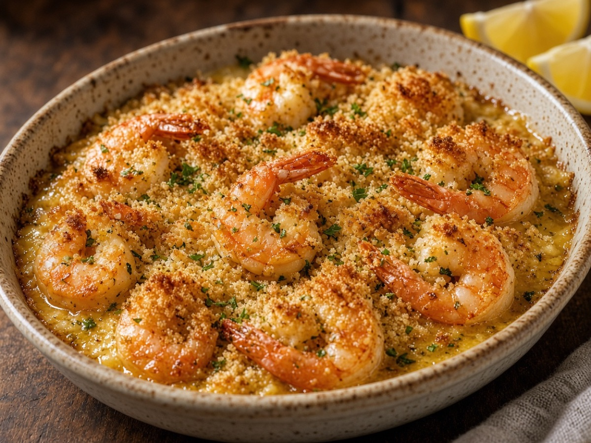
Seafood$5.99Buttery garlicky shrimp baked under a sherry-breadcrumb topping — a century-old Chicago restaurant classic.
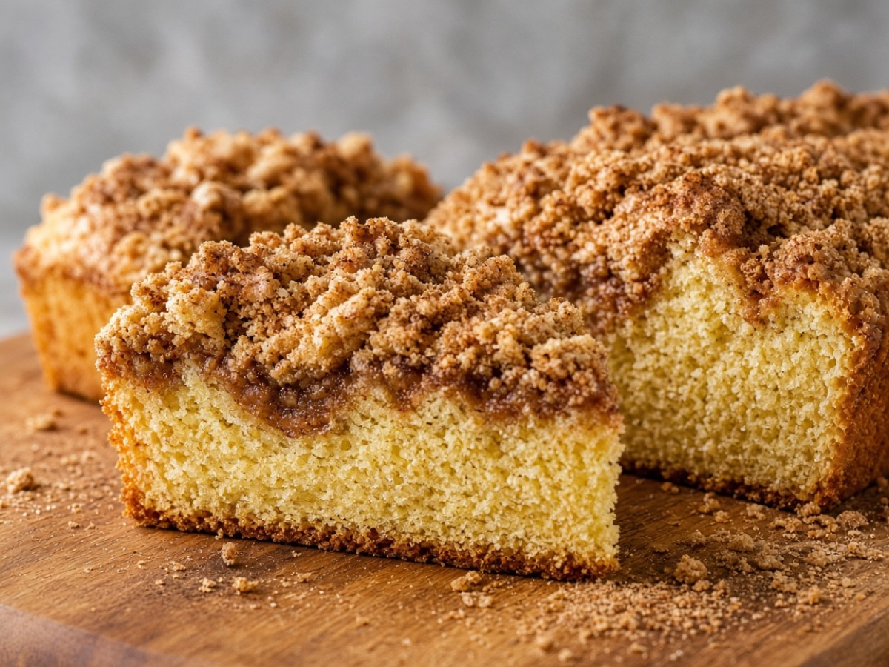
Breakfast$3.99Tender sour-cream coffee cake with a thick cinnamon-sugar ribbon and buttery streusel.
Tall, dense, and creamy baked cheesecake with a sour cream finish — the Chicago bakery classic.
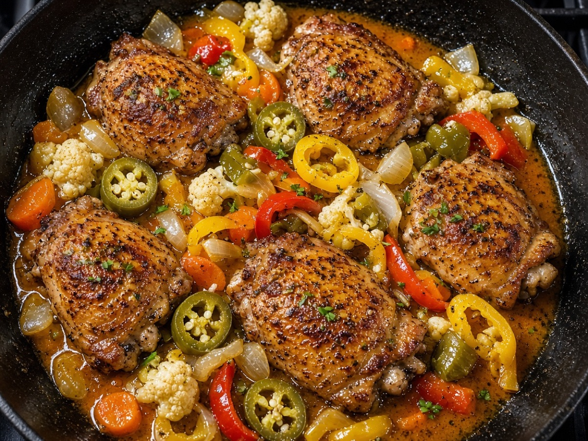
Mains$3.99Juicy chicken thighs with Chicago hot giardiniera, peppers, and a garlicky pan sauce.
No charge, ever
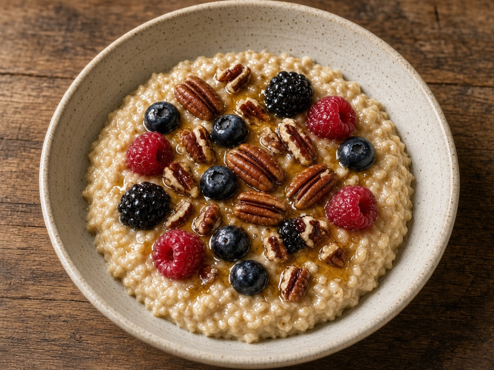
BreakfastFreeCreamy steel-cut oats finished with nutty brown butter, maple, and toasted pecans.
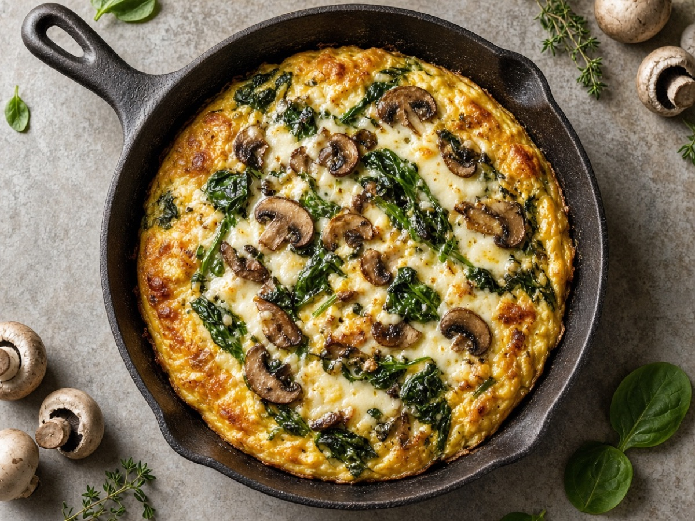
BreakfastFreeOven-finished eggs with sautéed mushrooms, wilted spinach, and melted Gruyère.
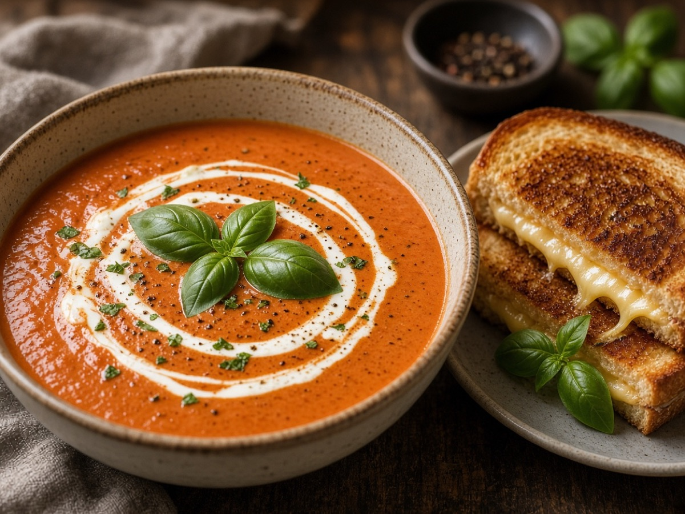
MainsFreeSilky roasted tomato soup finished with cream and plenty of fresh basil.
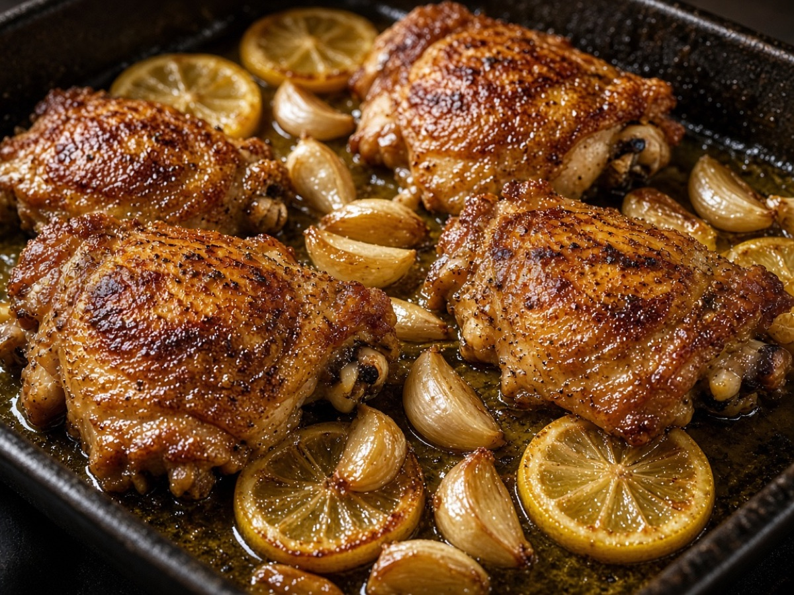
MainsFreeCrispy-skinned chicken thighs roasted over soft garlic cloves and lemon.
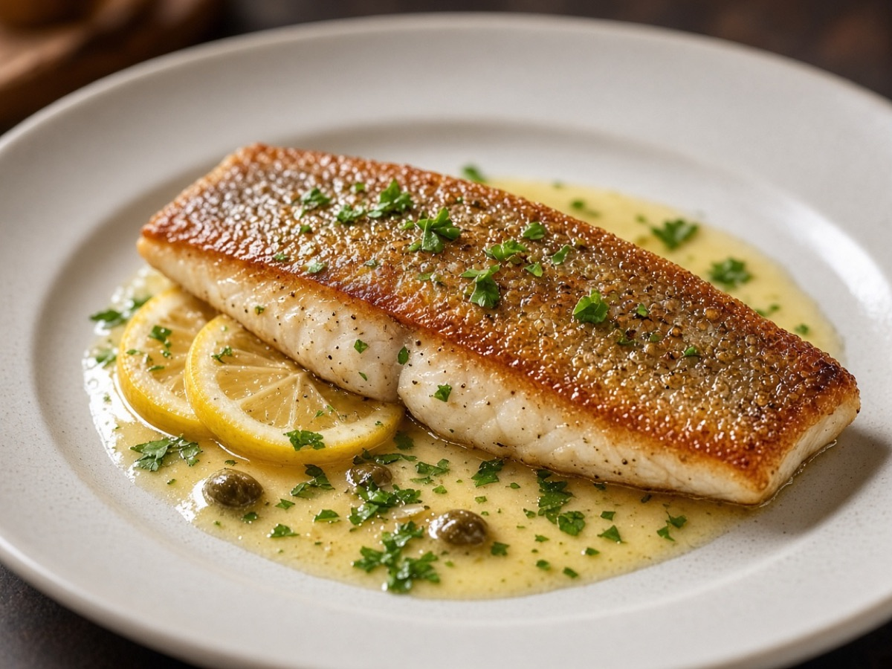
SeafoodFreeCrisp-skinned trout fillets seared in butter and finished with lemon and parsley.
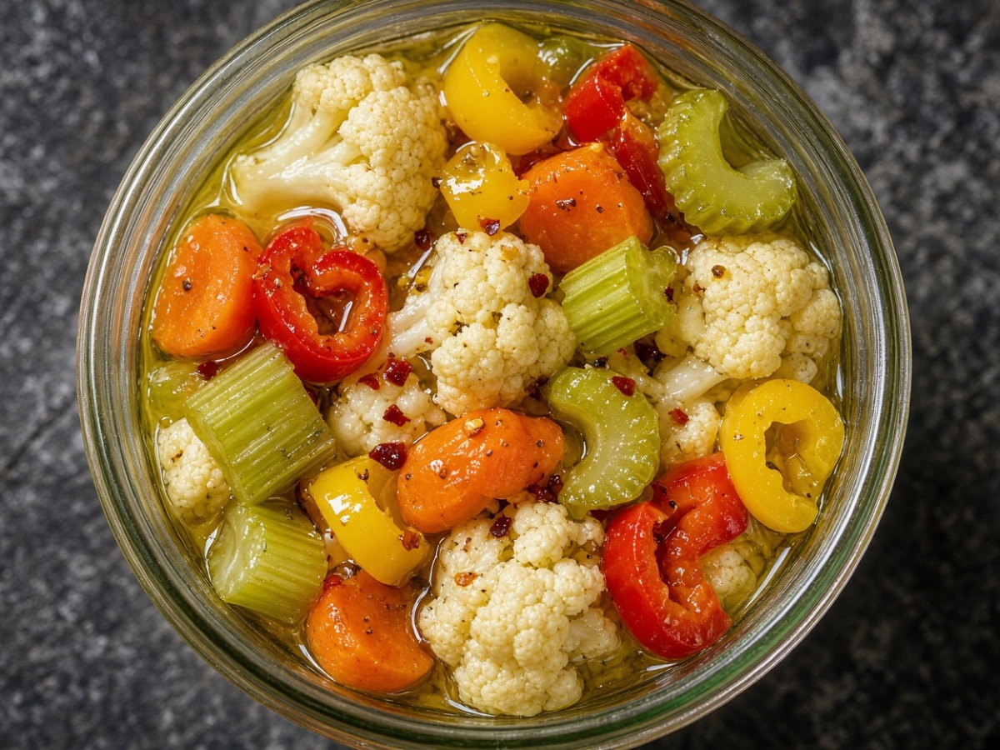
SidesFreeCrunchy pickled vegetables in a spicy oil-vinegar brine — the condiment Chicago runs on.
How the shop works
Every recipe page shows the story, the photo, and the first ingredients. Free recipes open in full right away.
Add premium recipe cards to your cart. Apply a coupon like WELCOME10 before you pay.
No login and no password — just your email and billing details. Your order is placed with status Pending.
Once payment is confirmed, your printable recipe cards arrive by email. Track any order with its number.
Explore
Steel-cut oats, cinnamon coffee cake, frittata, cheddar biscuits, and French toast bake.
5 recipes · 2 freeSmoked whitefish spread, pan-seared trout, and classic shrimp De Jonghe.
3 recipes · 1 freeItalian beef, deep-dish pizza, giardiniera chicken, smash burgers, and tomato soup.
9 recipes · 3 freeHomemade giardiniera, crispy potato wedges, roasted asparagus, and cheddar cornbread.
6 recipes · 3 freeChicago-style cheesecake, flourless chocolate cake, caramel apple hand pies, and oatmeal cookies.
6 recipes · 2 freeLake & coast
Verified buyers
“The Italian beef card nailed the thin slice and spicy giardiniera — tastes like a real stand downtown.”
“Guest checkout, no account. Deep dish came out with a crisp cornmeal edge just like the recipe promised.”
“Started with free tomato soup, then bought the cheesecake. Dense, tall, and perfect after a chill overnight.”
Bundle & save
Add any three premium recipe cards worth $20 or more and use code MILL20 at checkout. Or take $5 off any order over $15 with MOSS5.
Just added
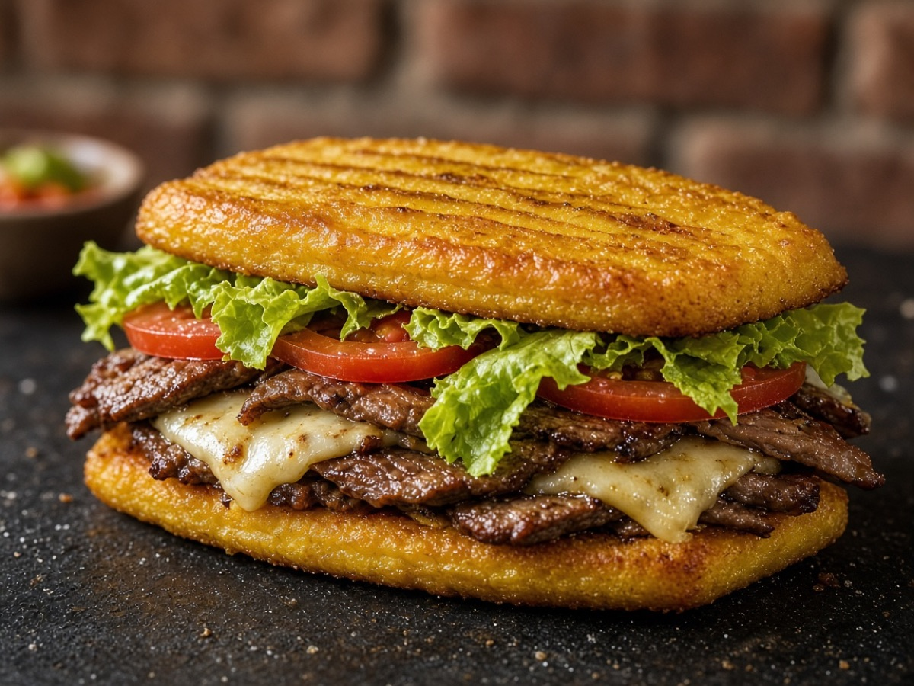
Mains$4.99Chicago’s Puerto Rican classic — smashed fried plantains as the “bread,” filled with garlicky steak, mayo, and cheese.
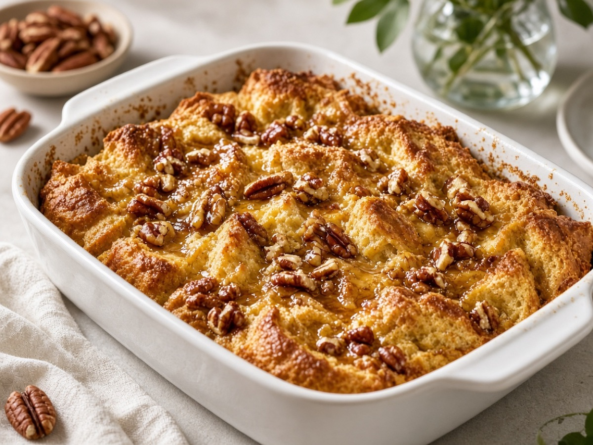
Breakfast$4.99Overnight baked French toast with cinnamon custard, toasted pecans, and maple glaze.
Flaky handheld pies filled with cinnamon apples and a ribbon of caramel.
Welcome offer
Join 12,000+ home cooks. Get the code WELCOME10, a free recipe every Sunday, and first access to new recipe cards. No spam, unsubscribe any time.